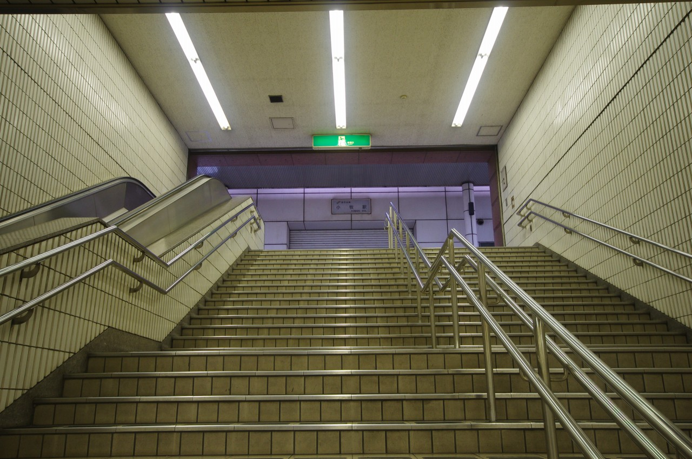
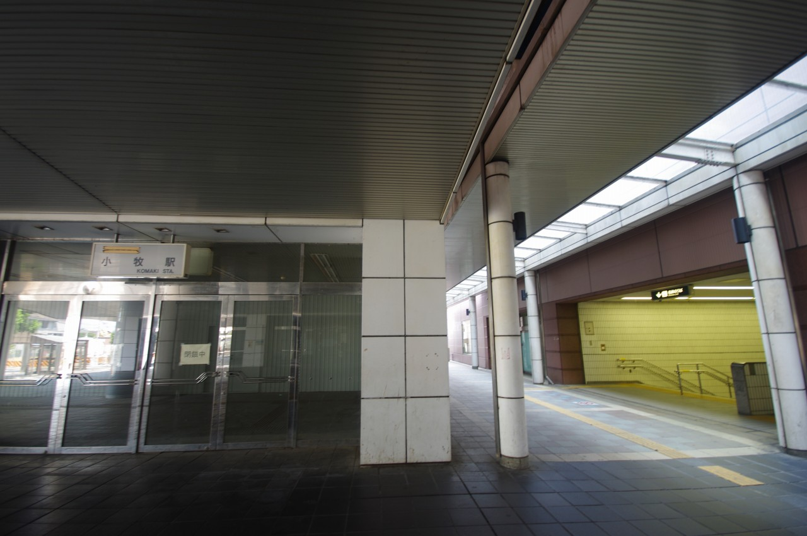
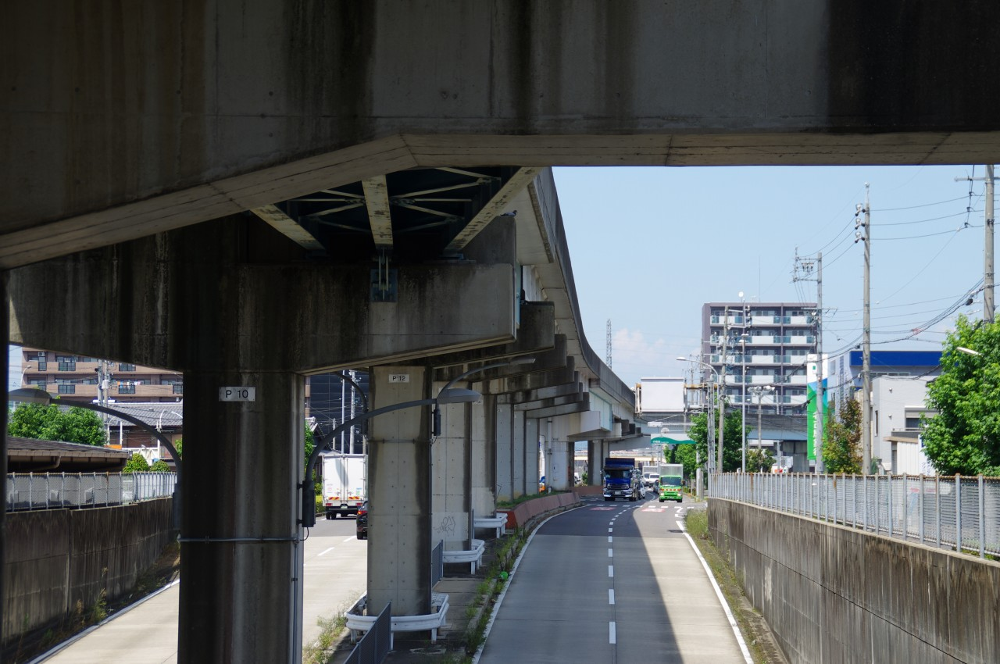

桃花台新交通桃花台線 小牧駅跡
2019年8月訪問。
桃花台線は小牧駅から桃花台ニュータウンの桃花台東駅を結んでいた新交通システムである。バブル真っ只中の1991年に開業、そして15年後の2006年に廃止と非常に短命であった。 現在、路線設備は活用されることもなく放置されている。一言で言えば「勿体ない」路線であるが、上飯田止まりであった当時の小牧線の利便性の悪さ、需要予測の甘さ、バブル景気といった要因が絡み合った結果なのだろう。

名鉄小牧駅の東口から上を見上げると、何やら別の路線の駅のようなものが見える。そう、これが桃花台線の小牧駅である。

駅を出ると年中閉ざされたシャッターが真っ先に目に入る光景はなんとも虚しい。

桃花台線の文字がしっかりと残っている。

左が桃花台線、右が名鉄の小牧駅入口である。

ガラス張りでちょっとだけ中を覗くことができる。

駅を出て左方向へ進んでみる。

ごみ箱。こんなところに桃花台新交通の名が残っていた。

道路上に残る高架。この先で右へ曲がり小牧原駅付近まで小牧線と並走する。

駅舎の東側へ。

立派な駅舎だ。これが赤字路線で15年間しか利用されていないというのだから本当に勿体ない。

東側にはバスターミナルが整備されている。

ループ線の先端へ。日本の新交通システムにおいてループ線は非常に珍しい。他に思い当たるものはニューシャトルの大宮駅くらいだろうか。(ただし、駅のホーム自体がループ線の中に設置されている。)

小牧駅周辺では桃花台線撤去のための工事が進んでいる。この巨大な廃線跡が見られるのも長くはないだろう。